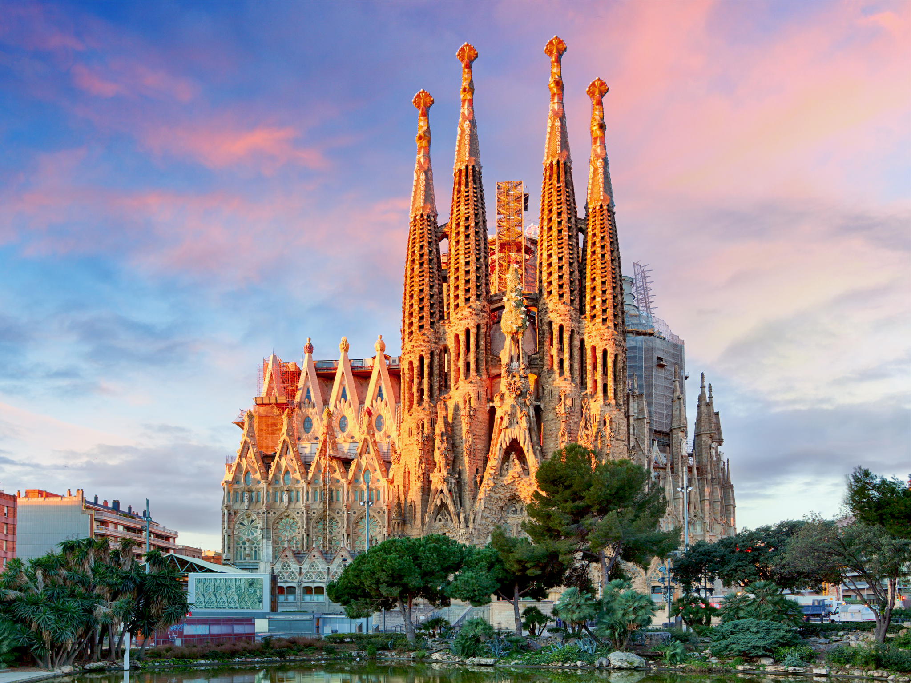

La Sagrada Familia

La Sagrada Familia es uno de los monumentos más emblemáticos de Barcelona. Este impresionante templo, diseñado por el famoso arquitecto Antoni Gaudí, ha estado en construcción desde 1882 y todavía no está terminado. Su impresionante fachada, sus torres espirales y su interior único te dejarán sin palabras.
Actividades: Visita la Sagrada Familia y disfruta de sus impresionantes vistas desde las torres. También puedes unirte a una visita guiada para conocer más sobre la historia y la arquitectura del lugar.
Las Ramblas
Las Ramblas es una calle emblemática de Barcelona, llena de vida y movimiento. Aquí encontrarás tiendas, restaurantes, artistas callejeros y mucho más. Es un lugar perfecto para pasear y disfrutar de la cultura local.
Actividades: Pasea por Las Ramblas y disfruta de la vista y la cultura local. También puedes visitar el famoso mercado de La Boquería, que se encuentra cerca de Las Ramblas.
Parque Güell
El Parque Güell es otro de los lugares más emblemáticos de Barcelona, también diseñado por Antoni Gaudí. Este parque es famoso por su colorida terraza, su enorme salamandra y sus impresionantes vistas de la ciudad.
Actividades: Visita el Parque Güell y disfruta de sus hermosos jardines y arquitectura única. También puedes unirte a una visita guiada para conocer más sobre la historia y la arquitectura del lugar.